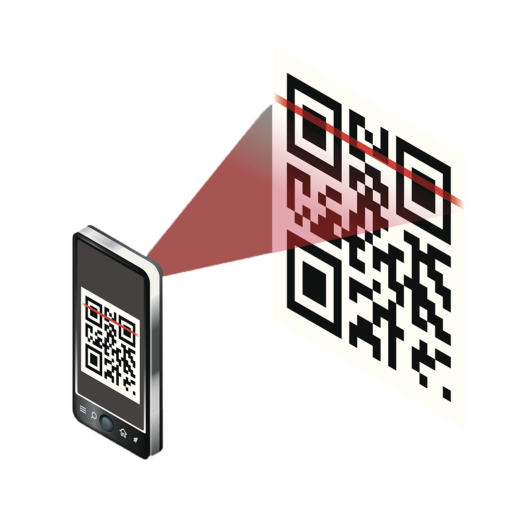

<div class="container-fluid mt-4">
    <div class="row justify-content-around">
        <mat-card class="col-4">
            <mat-card-header class="card-title-center mb-1">
              <mat-card-title> Scannez un QR Code</mat-card-title>
            </mat-card-header>
            
            <mat-card-content class="mt-2">
              <p class="text-justify">
                Scannez le QR Code sécurisé d'une carte détenue par un patient afin d'obtenir l'accès à l'ensemble de ses données médicales,
                ainsi que son dossier médical complet.
              </p>
            </mat-card-content>
            <mat-card-actions class="justify-content-center">
              <button mat-raised-button color="accent" (click)="goToScan()">Scannez</button>
            </mat-card-actions>
          </mat-card>

          <mat-card class="col-4">
            <mat-card-header class="card-title-center mb-1">
              <mat-card-title> Creez un nouveau carnet de santé </mat-card-title>
            </mat-card-header>
            
            <mat-card-content class="mt-2">
              <p class="text-justify">
                Créez le carnet de santé numérique d'un nouveau patient de manière complètement sécurisée, et générez un QR Code unique.
              </p>
            </mat-card-content>
            <mat-card-actions class="justify-content-center">
                <button mat-raised-button color="primary" (click)="goToCreation()">Créez</button>
            </mat-card-actions>
          </mat-card>
    </div>
</div>